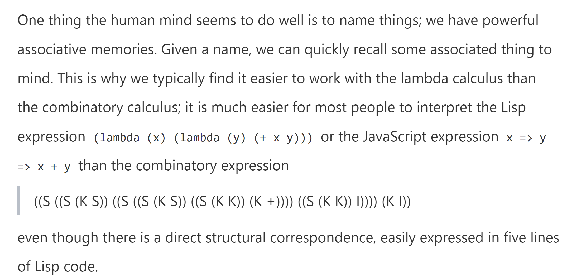

Notes for SICPJS
Notes for SICP JS.
Introduction
SICPJS is a Java Script version(or Source Language) of the computer science textbook Structure and Interpretation of Computer Programs (SICP) . The original textbook was written by Massachusetts Institute of Technology professors Harold Abelson and Gerald Jay Sussman with Julie Sussman, and is known as the "Wizard Book" in hacker culture. In NUS, year1 CS students who take CS1101S uses SICPJS as the reference book on their amazing study journey with the Source Academy.
During my study of CS in 2023/24 Sem 1 in CS1101, I find SICPJS a great book. It not only works as an introductory book to computer science, but also inspired me to think about the fundamental principles of CS. I wrote this note during my sem1 study in CS1101S and is still working on the book after that. Hopefully, this note would have been finished in 2023/24 Sem2.
This note involves ideas that I find inspiring in the book and questions that I came up with while reading. Notes with (U) are questions that are unsolved and it would be great if readers could comment below about your ideas on the notes.
I recommend anyone studying CS to read the book(either the original version or JS version), and hopefully this note would be of some use to the reader's understanding of the book.
Notes
Foreword
(U)What is combinatory calculus & lambda calculus & predicate calculus?

Lambda Calculus : (lambda x.lambda y. x+y)(5 6) = 11
A lambda notation is equivalent to a Turing Machine, vice versa
(U)How can you use a lambda notation to represent AND and OR?
For reference, if we define True and False as:
True: lambda x. lambda y. x False: lambda x. lambda y. yFor any boolean value b, the logic NOT can be represented as
NOT: lambda b. b False TrueProof: case 1: b = True
Not b = Not True = True Flase True = False case2: b = False Not b = Not False = False False True = True(U)What is object oriented approach?
(U)Why does the author say that most programming languages “does not have a completely automatic storage management”?
(U)Is it better to have 100 functions programmed on 1 data structure or 10 functions for each of 10 data structures?
(U)What is Lisp?
Chapter 1 Building Abstractions with Functions
1.1
Inflix Notation
operand + operator + operand
JS programmers know the value of everything but the cost of nothing.(LOL)
The fact that every expression has a value and JS programmers are known for not caring about time/space efficiency.
(U)What is the difference between statements and expressions?
A?
Snake Case & Camel Case
Different ways to name variables.
Chapter 3: Modularity, Objects, and State
3.1
Why use the CSE machine, why is environment an important thing?(3.1.2)
Storing the temporary data that the function needs in the local environment of a function helps us to generalize functions(for example, in this way the memoization progress can be applied to different functions)
Encapsulation: We say a variable is encapsulated in the environment when its information is only accessed inside the environment. A general systemword designing principle called “the hiding principle“ is that a system gets more modular and robust by providing information access to only the parts of the programme that are “need to know”.
Monte Carlo Method
The use of randomness. Say you want to calculate the area of a circle(x^2 +y^2 <= 1). Choose a rectangle(whose area you have already know), and try to make many following experiments: pick up one point and test whether the point is in the circle. If we try this many times, we get the possibility of a point in the rectangle is in the circle, thus p * area_of_rectangle = area_of_circle.